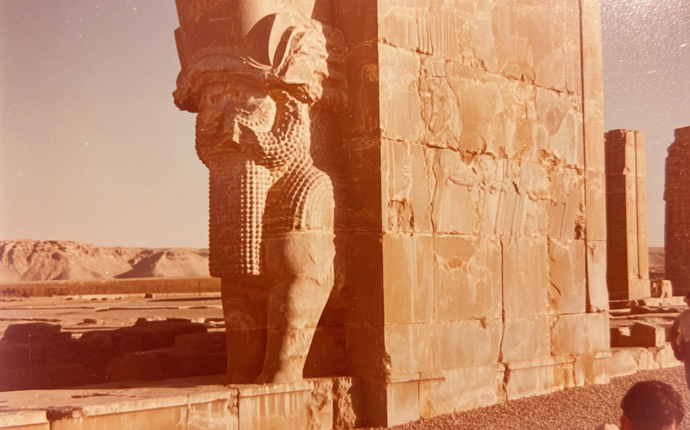
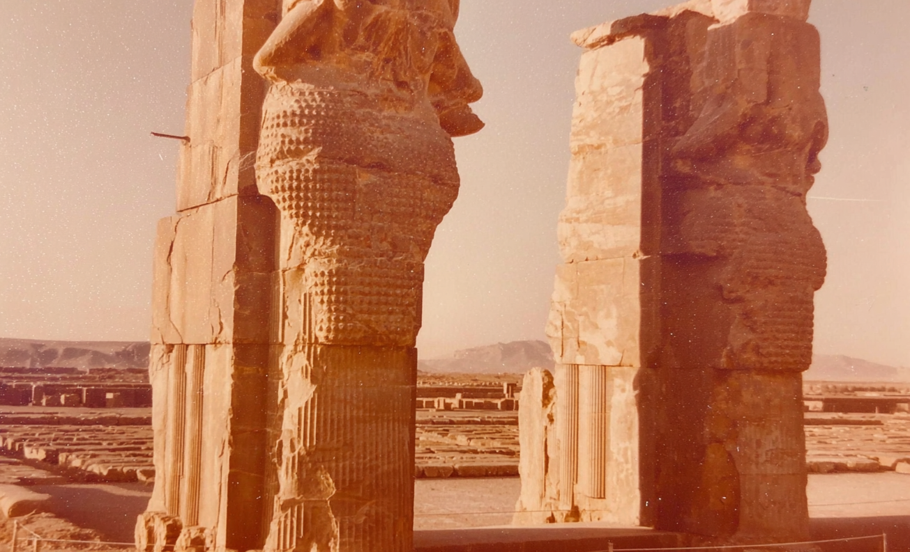
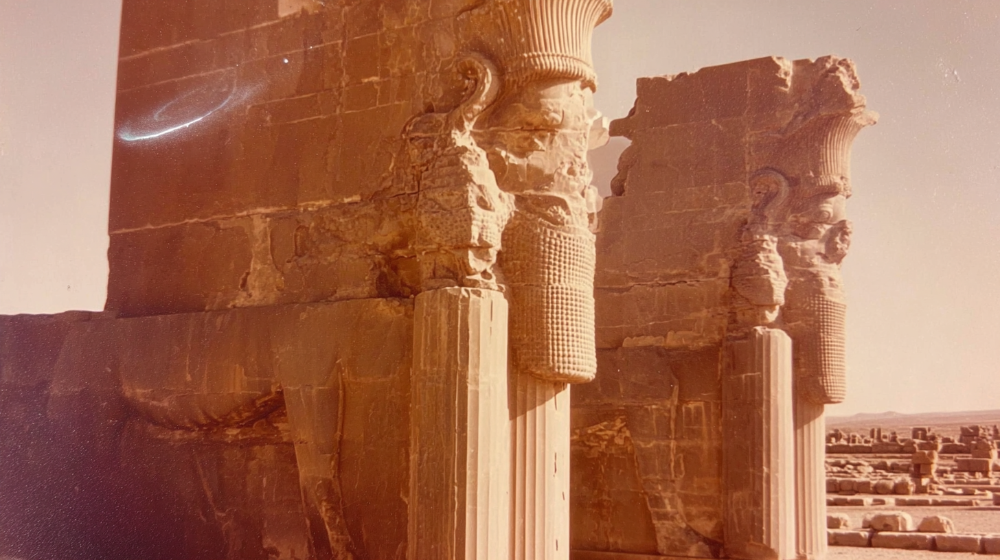
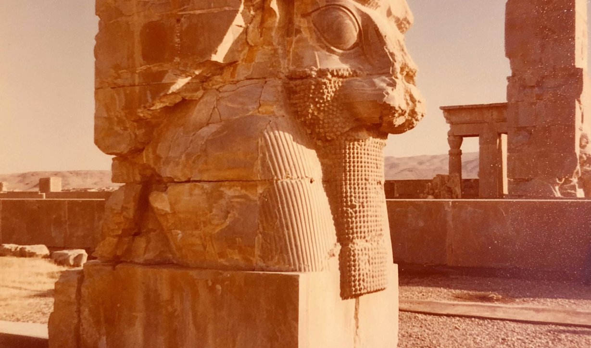
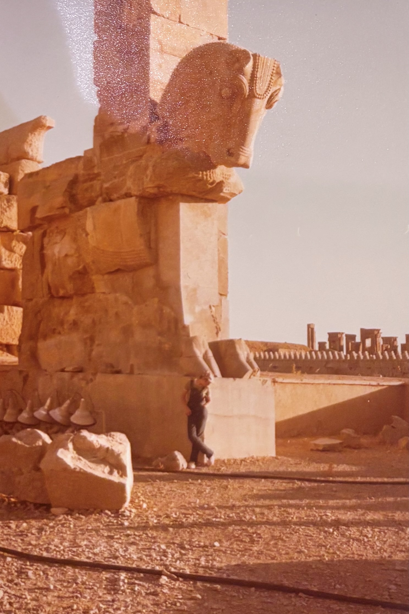

A massive stone guardian figure stands embedded in the corner of an ancient wall, its weathered surface glowing in warm desert light with mountains stretching across the horizon.
Two towering carved guardians frame the open ruins behind them, their detailed beards and headdresses catching the soft amber haze of the distant landscape.
Monumental stone figures project outward from thick columns, overlooking the sprawling archaeological site and distant plains under a faded golden sky.
close up of 70's analog photograph of a Persepolis column. sun-bleached colors, subtle dusty pink and muted ochre tones, soft film grain, heat shimmer distortion, textured details, imperfect composition, 35mm kodachrome, muted natural colors, low contrast grading, soft highlights, hazy atmosphere, arid heat, Light film grain, dimpled texture, organic texture, low digital sharpness, no vivid colors. Shot like contemporary cinema, realistic, alive, subtle faded blurry shutter motion
A close view of a carved guardian head reveals intricate textures and worn details, illuminated by low sunlight against the quiet ruins beyond.